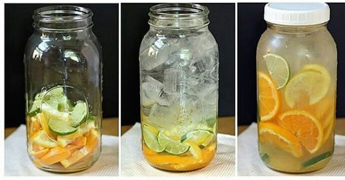

(The Doctors TV) - Misty Sanders has struggled with weight all her life. When her husband was deployed to Iraq for a year, she decided to use his absence to re-commit herself to losing weight so she could surprise him when he came home.
Sanders, who wore a size 20 then, watched the pounds melt away. At her heaviest she weighed 315 pounds, after trying Atkins, Weight Watchers, Jenny Craig and a slew of other weight loss programs without any success, she fell into depression and her marriage almost fell apart. She couldn't afford surgery and didn't know what to do next, until she saw Doctor Oz talk about Garcinia Cambogia. Misty decided to give it a try, considering she had nothing to lose. That day changed her life forever. Now others are following her lead.
Misty isn't the only one who is seeing the positive effects of this new program. Hollywood star Jessica Simpson shocked the world after losing 67 lbs in 2 months with the new Garcinia Cambogia Slim Diet. "I Couldn't believe how quickly I saw the effects... and the fact that I could eat whatever I want when I want and still lose weight!" said Jessica as we spoke with her before her wedding. The combined effect is clinically proven to not just shred fat off your physique but flush out all the junk in your body and increase your metabolism without harming your immune system.
Will Misty's weight loss with Garcinia Cambogia Slim work to her advantage?
Losing weight often feels like an impossible challenge. We have evaluated numerous fad diets over the years. All too frequent the results are just shy of being painfully disappointing.
The reason why most diets fail, in our opinion, is that they impose unrealistic restrictions on how you live your life. Many dietitians say eat lots of protein others emphasize carbohydrates. In either case, you're left with having to make rather drastic changes to the types of food you eat, when you eat it. In this monthly issue, Our sponsors gave us a monthly supply of Garcinia Cambogia Slim so we can take an in-depth look at an emerging and promising weight loss trend.
Miranda Lambert used Garcinia Cambogia Slim and lost 33 lbs in just 2 months.
Nevertheless, as we began to investigate the countless success stories reported by celebrities from around the world. We decided that this fat loss trend was worth a closer examination. The above celebrities had not significantly changed their current lifestyles or food consumption.
Garcinia Cambogia Slim has been clinically proven to:
- Boosts Energy
- Rich in Antioxidants
- Help Eliminate Bad Toxins That Have Built Up Over the Years
- Help Regulate the Metabolism
PUTTING THE DIET TO THE TEST
For the The Doctors TV Test, a free bottle of Garcinia Cambogia Slim was delivered in a few days and only charged us for shipping. Garcinia Cambogia Slim is one of the most concentrated and purest forms of Garcinia on the market. It was our shared opinion that this would give me the most accurate results for my test. Below you can see my results and read about them.

My Results - I lost 31 lbs of stomach fat in just one month using the Garcinia Cambogia Slim - Suzanne Pischner (The Doctors TV)
1. Mix a jar (or cup) with your favorite fruit and mix it with water overnight
2.
In the morning, take one Garcinia Cambogia Slim capsule and mix it with your fruit infused water

Week One:
One week after the garcinia diet I was surprised at the dramatic results. My energy level was up, and I wasn't even hungry. A welcomed side effect of the Garcinia Cambogia Slim diet is its power to curb the appetite.
Best of all, I didn't even change anything about my daily routine. On Day 7, I got on the scale and couldn't believe my eyes. I had lost 4.5 lbs. But I still wasn't convinced, since they say you lose a lot of water weight at the beginning of any diet. I wanted to wait and see the results in the upcoming weeks.
Week Three:
After 3 weeks, all my doubts and skepticism had absolutely vanished! I am down, from a 40 to a 36 pant sizes after losing another 15.5 lbs. And I still have a ton of energy. Quite often, around the third week of other diets, you tend to run out of steam. But with the Garcinia Cambogia Slim my energy levels don't dip, instead they remain steady throughout the day.
Week Four:
After the fourth week, my final results were shocking. I lost an unbelievable 31 lbs since starting the Garcinia Cambogia Slim diet! Actually everyone at The Doctors TV is kicking themselves for not having volunteered to be the guinea pig. Using the Garcinia Cambogia Slim in week 4, I lost an additional 11 lbs.
Conclusion: Like us, here at "The Doctors TV", you might be a little doubtful about the effects of this diet, but you need to try it for yourself; the results are real. After conducting our own personal study we are pleased to see that people really are
finding success with it (myself included). And you have nothing to lose. To order your bottle, follow the links I have provided and know that you are getting a quality product that works; no strings attached!
You can reach your weight loss goals with the Garcinia Cambogia Slim diet,
Suzanne Pischner
EDITOR'S NOTE: For a limited time, the Official Suppliers of Garcinia Cambogia Slim have agreed to offer a Free Monthly Supply to our readers.
Thursday, October 29, 2015
Add A Comment
Recent Facebook Comments